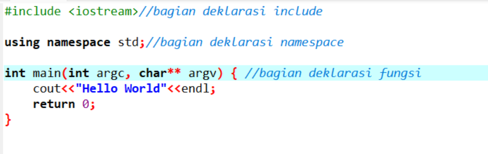

Sintaks dasar C++
Bentuk atau struktur dasar program yang dibuat dengan C++ terdiri dari tiga bagian:
- Bagian include
- Bagian namespace
- Bagian fungsi
mari kita lihat contohnya:
Ini adalah struktur paling sederhana dari program C++.
Berikut ini penjelasan detail setiap bagian:
1.Bagian deklarasi Include
pada bagian ini, kita mendefinisikan library (pustaka) apa saja yang akan kita gunakan di dalam program.
Library bisa kita anggap sebagai program lain yang ingin kita gunakan di dalam program kita.
Pada contoh di atas, kita menggunakan pustaka iostream. Library ini berisi fungsi-fungsi untuk melakukan input dan output.
Kadang kita juga akan menemukan library yang di-include dengan ekstensi .h, .cpp, .hpp, .cc, .c, dsb.
Contoh:
Semua memiliki arti yang sama, yaitu: gunakan library yang lain ke dalam program ini.
Perbedaanya pada jenis file yang akan diimpor:
- h artinya header file dari C atau C++;
- .cpp artinya source code dari C++;
- .hpp artinya header file dari C++;
- .cc dan .c artinya header file dari C.
Lalu perbedaan yang lain tedapat pada simbol yang digunakan untuk include.
Jika menggunakan tanda kurung siku <...> maka program akan mencari library ke dalam sistem komputer kita.
Sedangkan yang menggunakan tanda petik, akan mencari ke lokasi yang ditentukan di sana.
2. Bagian Deklarasi Namespace
Bagian ini sebenarnya bersifat opsional, bisa ditulis bisa tidak.
Pada contoh di atas, kita menggunakan namespace std. Karena fungsi-fungsi pada iostream dibungkus dalam namespace std.
Apabila kita tidak menggunakan namespace std, maka untuk menggunakan fungsi cin dan cout yang ada pada iostream harus diawali dengan std::.
Seperti ini:

Jika tidak ingin menulis std:: terus-menerus, maka gunakanlah namespace std.
3. Bagian Fungsi
Bagian ini adalah baigan terpenting, di sinilah kita akan banyak menulis kode program.
Pada contoh di atas, terdapat fungsi main.
Fungsi main() adalah fungsi yang akan dieksekusi pertamakali saat program dibuka.
Fungsi ini wajib ada di setiap program yang dibuat untuk dieksekusi.
Tapi…
Jika hanya membuat program yang berfungsi sebagai library saja, fungsi main() boleh tidak dibuat.
Selain fungsi main() kita juga bisa membuat fungsi yang lain pada bagian ini.
Contoh:

Pada contoh di atas kita membuat fungsi hell() di bawah fungsi main().
Apakah boleh ditulis di atas fungsi main()?
Boleh Saja.
Yang tidak boleh, menuliskannya di dalam fungsi main.